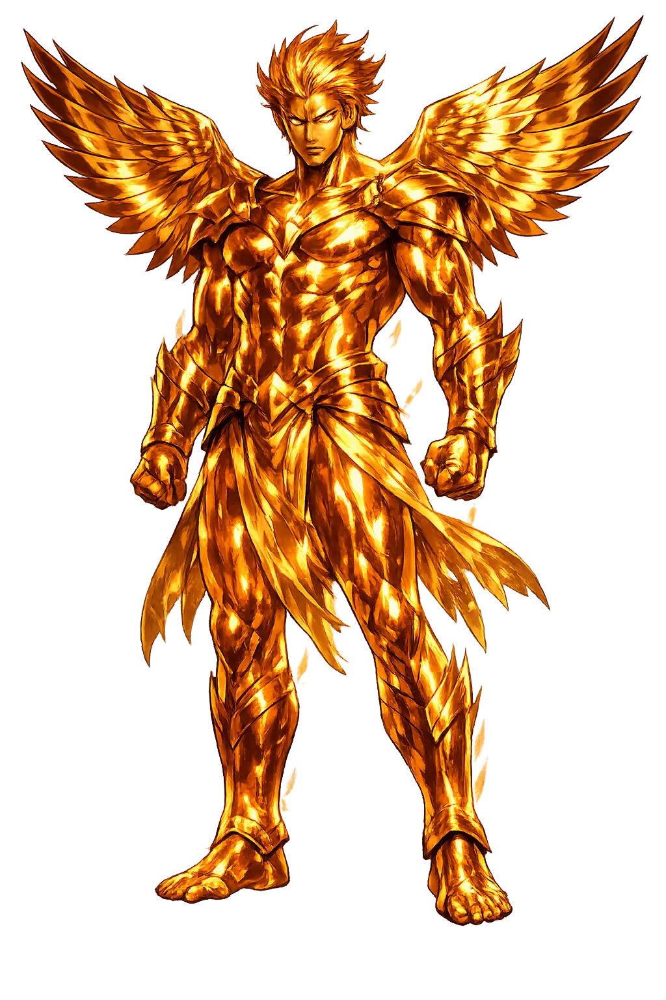
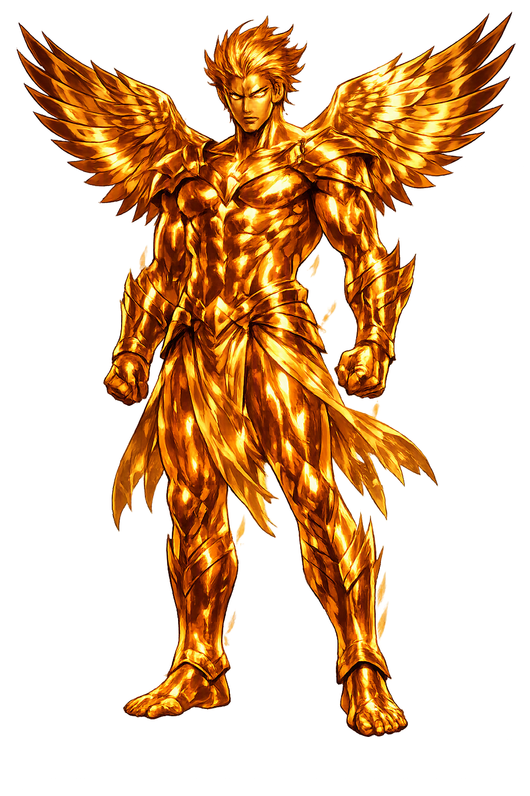

Stories of Animus
Animus is not a mythological character but a concept that runs through Roman literature, rhetoric, and ethics. Its 'mythology' is the story of how Latin speakers imagined the active self: the mind that commands, the spirit that endures, and the anger that destroys.
For Roman writers the animus is the source of virtus, the courage that makes a citizen worth the state. Cicero calls the animus divine — a fragment of the gods' own fire dwelling in the human breast, to be cultivated as our best part (Tusculan Disputations 1.64–66) — and Livy makes the point with a story: Horatius Cocles, holding the bridge alone against Etruria, cries that every man must sooner or later die, and those who die for their country are blessed (Ab Urbe Condita 2.10). The word runs through the whole ethic: magnanimus, great-souled; fortis animo, brave in mind; abicere animum, to throw away one's spirit — the one unforgivable loss.
Roman heroism is interior before it is physical: the legion's discipline was an animus trained in common.
Roman Stoics identified the animus with the hēgemonikon, the ruling part of the soul, and made its governance the whole of philosophy. Seneca's treatise On Anger anatomizes the animus inflamed: wrath, he says, is a brief madness, and the wise man cures it as a doctor cures fever, before it becomes habit (De Ira 1.1–4). Marcus Aurelius, emperor and diarist, began his mornings reminding his ruling faculty what it was and what work lay before it (Meditations 2.1–2). The passions were diseases of the animus; reason its hygiene; tranquility its health. The prize of this medicine was freedom — the only kind Rome could not grant by law: an animus dependent on nothing external, therefore afraid of nothing external.
The Stoic wager is that the will, properly governed, is the one province fortune can never invade.
Virgil runs the whole moral range of the word through his two heroes. Aeneas is praised for the mind that does not break — 'his mind remains unmoved, his tears fall in vain' as Dido burns, the discipline of grief bent back into duty (Aeneid 4.449). Turnus ends the poem driven by the same word at its worst: resolution curdled into fury, pressing the fight on when the gods have already decided, until the poem's last line closes on a life 'fleeing, indignant, down to the shades' (Aeneid 12). Latin itself declines to choose: animus means both noble resolve and violent temper, and the Aeneid holds both senses up to the light until the reader sees they share one root.
The same inner fire, Virgil says, forges the founder and destroys his last enemy; virtue is animus with a bridle.
In Jungian psychology the animus is the unconscious masculine image within the female psyche — the inner figure of spirit, word, and argument, just as the anima is the soul-image in the male (Jung, 'The Relations between the Ego and the Unconscious,' Collected Works 7; developed in Aion, CW 9ii). Integrated, he is the woman's bridge to inner discrimination; unintegrated, he possesses her opinions as her own — she is 'animus-ridden,' lectured by a voice she mistakes for herself. Later analysts, notably Marie-Louise von Franz, refined the schema, and feminist critics have reworked or rejected it; but the borrowed Latin word kept its antique aura: the animus is the mind that speaks from within, whether one calls it archetype, inner voice, or conscience.
Twenty centuries after Seneca, the word still names an inner power that must be befriended rather than obeyed.
The Active Power of the Soul
Animus is the Latin word for mind, spirit, courage, and sometimes fierce anger. It names the active, directing part of the person: the faculty that thinks, decides, resists, and fights. Where anima is breath and life, animus is will and consciousness. Roman ethics placed great weight on the animus as the seat of virtue, and the word survives in English as a sign of both spiritedness and settled hostility.
The rational faculty that deliberates, remembers, and plans.
The animating energy of character and resolve.
The quality that enables a person to face danger without yielding.
Animus can also mean fierce temper — the same energy turned destructive.
From the original script to the living URL
ANIMUS
The name in its original Greek form. Animus (ANIMUS) is attested in the source tradition — “Mind, spirit, courage”. Its original diacritics and script distinctions carry the full phonetic and orthographic weight of the source tradition.
animus
The plain animus form is identical to the Unicode restoration. Because this name is already written in Latin letters, no diacritics, stress, or script information were lost — only capitalization differs.
Animus
The Unicode restoration does not need to recover lost marks for Animus. Its value is canonical spelling and consistent cataloguing, not the reconstruction of erased orthography. The domain is readable as-is to both DNS and humanity.
Animus.com
This restoration is written entirely in ASCII letters — no Punycode encoding stands between Animus and the DNS. The domain reads identically to machines and to human eyes.
Owned, ideal, and ASCII forms of Animus
Animus
Restores ANIMUS. The full Unicode restoration. animus.com is not in the PuniCodex collection — it is watched for release; if it drops, this temple upgrades to an owned flagship.
How Animus was spoken
How Animus travels from ancient script to the modern URL
To meditate on Animus is to meditate on the will. The Latin word contains both the noblest and the most dangerous forms of spiritedness: courage and wrath, resolution and resentment. The Stoics were right to see the animus as a faculty that needs governance. Without reason it becomes mere force; with reason it becomes virtue.
Enter Extended Lore